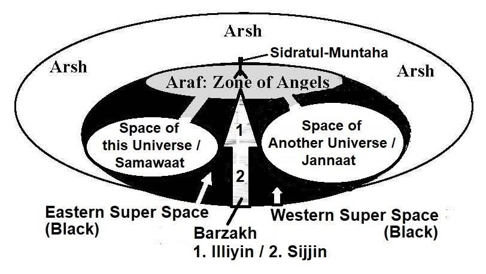
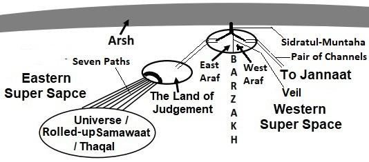

8. Major Safayat
8. মেজর সাফায়াত
The Land of Judgment will be a temporary entity. Soon it will merge with the Thaqal, as it (Thaqal) will restart unrolling / evolving. It will be hot; everybody will be sweating. Many will recognize the Day. People will start seeking for salvation. They will go to Prophet Adam, Noah, Abraham, Musa, Isa and other Prophets one after another. But, none will request Allah for the Judgment. Finally, people will come to Prophet Muhammad (pbuh). He will pray for the Judgment and Salvation.
বিচার ভূমি একটি অস্থায়ী সত্তা হবে. শীঘ্রই এটি থাকালের সাথে মিশে যাবে, কারণ এটি (থাকাল) পুনরায় চালু করা/বিকশিত হতে শুরু করবে। এটা গরম হবে; সবাই ঘামতে থাকবে। দিবসটিকে অনেকেই চিনবেন। মানুষ পরিত্রাণ খুঁজতে শুরু করবে। তারা একের পর এক হযরত আদম, নূহ, ইব্রাহিম, মুসা, ঈসা ও অন্যান্য নবীদের কাছে যাবে। কিন্তু, বিচারের জন্য কেউ আল্লাহর কাছে আবেদন করবে না। অবশেষে মানুষ হযরত মুহাম্মদ (সাঃ) এর কাছে আসবে। তিনি বিচার ও পরিত্রাণের জন্য প্রার্থনা করবেন।
9. Marshaling for the Judgment
9. বিচারের জন্য মার্শালিং
Allah will accept the prayer for Judgment and Salvation. Then the marshaling will start. The angels will come and stand in lines. A Field Court will be established by placing a Balance. Allah will come for the Judgment. All will be ordered to prostrate before Him as soon as His shin will be visible. But, Unbelievers will fail: ―The Day that the Shin shall be laid bare, and they shall be summoned to bow in adoration, but they shall not be able; their eyes will be cast down; ignominy will cover them seeing that they had been summoned aforetime to bow in adoration, while they were complete‖ [Al Quran 68: 42–43]
আল্লাহ বিচার ও নাজাতের জন্য দোয়া কবুল করবেন। তারপর মার্শালিং শুরু হবে। ফেরেশতারা এসে লাইনে দাঁড়াবে। ব্যালেন্স রেখে একটি মাঠ আদালত প্রতিষ্ঠিত হবে। বিচারের জন্য আল্লাহ আসবেন। সকলকে নির্দেশ দেওয়া হবে যে তাঁর পাঁজর দৃশ্যমান হওয়ার সাথে সাথে তাঁর সামনে সিজদা করবে। কিন্তু, অবিশ্বাসীরা ব্যর্থ হবে: ―যেদিন শিন খালি করা হবে, এবং তাদের উপাসনার জন্য ডাকা হবে, কিন্তু তারা সক্ষম হবে না; তাদের চোখ নিচু করা হবে; অসম্মান তাদেরকে ঢেকে ফেলবে যে তাদের পূর্বেই উপাসনা করার জন্য ডাকা হয়েছিল, যখন তারা সম্পূর্ণ ছিল” [আল কুরআন 68: 42-43]
9a. The Jannaat will be brought Near
9 ক. জান্নাতকে কাছে নিয়ে আসা হবে
The Jannaat will be brought close to the Land of Judgment in an orderly fashion. The planets/objects of the Jannaat will not destroy each other by collision.
সুশৃঙ্খলভাবে জান্নাতকে হাশরের ভূমির কাছাকাছি নিয়ে আসা হবে। জান্নাতের গ্রহ/বস্তু একে অপরের সংঘর্ষে ধ্বংস হবে না।
―When the sky is removed (closed into the Thaqal), when the Blazing Fire is kindled to fierce heat (the Thaqal igniting and preparing for re- initiation) and when the Jannaat is brought near each soul shall know what it has put forward.‖ [Al Quran 81: 11-14]
"যখন আকাশ অপসারণ করা হবে (থাকালের মধ্যে বন্ধ), যখন জ্বলন্ত অগ্নি প্রচণ্ড উত্তাপে প্রজ্জ্বলিত হবে (থাকাল প্রজ্বলিত হচ্ছে এবং পুনরুদ্ধারের জন্য প্রস্তুতি নিচ্ছে) এবং যখন জান্নাতকে কাছে নিয়ে আসা হবে তখন প্রতিটি প্রাণ জানতে পারবে সে কি এগিয়ে রেখেছে।" [আল কুরআন 81: 11-14]
FIGURE 39.3: Barzakh The Jannaat will be brought near, but it will stay beyond the Barzakh. The Barzakh will be thin at that time, but it will be impassible. Most likely, the Barzakh is a space that does not support matter, making this absolutely clear. During the Miraj, Prophet Muhammad (pbuh) was able to observe the objects of Jannaat from the Seventh Sky. It is evident that light can pass through the Barzakh.

চিত্র 39_3 / Figure 39_3
চিত্র 39.3: বরযাখ জান্নাতকে কাছে নিয়ে আসা হবে, কিন্তু তা বারযাখের বাইরে থাকবে। সেই সময় বারজাখ পাতলা হবে, তবে তা অসম্ভব হবে। সম্ভবত, বারজাখ এমন একটি স্থান যা বস্তুকে সমর্থন করে না, এটি একেবারে পরিষ্কার করে দেয়। মিরাজের সময় নবী মুহাম্মদ (সা.) সপ্তম আকাশ থেকে জান্নাতের বস্তুগুলো পর্যবেক্ষণ করতে সক্ষম হন। এটা স্পষ্ট যে বরযাখের মধ্য দিয়ে আলো যেতে পারে।
চিত্র 39_3 / Figure 39_3
9c. The Hell will be Kindled
9 গ. জাহান্নাম জ্বালানো হবে
At the time of Judgment, the Objects of Hell will be in the Thaqal in a compact state. The angels will tie the Thaqal with the chains and will pull it near the Land of Judgment. The un-rolling of the Thaqal will remain halted till the end of Judgment, but the contracted galaxies in the Thaqal (Objects of Hell) will be kindled to fierce heat. They will start producing fire.
বিচারের সময়, জাহান্নামের বস্তুগুলি একটি সংক্ষিপ্ত অবস্থায় থাকবে। ফেরেশতারা থাকালকে শিকল দিয়ে বেঁধে হাশরের ভূমির কাছে টেনে নিয়ে যাবে। থাকালের অন-রোলিং বিচারের শেষ অবধি স্থগিত থাকবে, তবে থাকালের সংকুচিত ছায়াপথগুলি (জাহান্নামের বস্তু) প্রচণ্ড উত্তাপে জ্বলবে। তারা আগুন উৎপাদন শুরু করবে।
―When the Sky is scraped (kushitat / the Thaqal scraped in a way to halt the evolution temporarily); When the Blazing Fire is kindled to fierce heat‖ [Al Quran 81: 11-12]
- যখন আকাশ স্ক্র্যাপ করা হয় (কুশিত/থাকাল স্ক্র্যাপ করা হয় যাতে সাময়িকভাবে বিবর্তন বন্ধ করা যায়); যখন জ্বলন্ত আগুন প্রচণ্ড তাপে প্রজ্বলিত হয়” [আল কুরআন 81:11-12]
Some of the sparks produced in the Thaqal will be thrown onto the Land of Judgment, and the fire will spread around the people. It will feel as though all of mankind is about to be consumed by the fire. Some of the living creatures of Hell will also enter the Land of Judgment. It is narrated in the Hadith that a large snake will appear; it will frighten the people. 9d. Araf, As-Sirat (the Paths), and Sidratul-Muntaha
থাকালের মধ্যে উৎপন্ন কিছু স্ফুলিঙ্গ বিচারের ভূমিতে নিক্ষেপ করা হবে এবং আগুন মানুষের চারপাশে ছড়িয়ে পড়বে। মনে হবে যেন সমস্ত মানবজাতি আগুনে ভস্মীভূত হতে চলেছে। জাহান্নামের কিছু জীবন্ত প্রাণীও বিচারের দেশে প্রবেশ করবে। হাদীসে বর্ণিত আছে যে, একটি বড় সাপ আবির্ভূত হবে; এটা মানুষকে ভয় দেখাবে। 9d. আরাফ, আস-সিরাত (পথ) এবং সিদরাতুল মুনতাহা
There are channels and sub-channels running through the super space and other realms to connect the universes, such as the Samawaat, Araf, Jannaat, and their associated objects. In addition, Araf and Sidratul-Muntaha also play roles in transferring people to the Jannaat, as discussed below:
মহাবিশ্বের সাথে সংযোগ স্থাপনের জন্য সুপার স্পেস এবং অন্যান্য অঞ্চলের মধ্য দিয়ে চলমান চ্যানেল এবং উপ-চ্যানেল রয়েছে, যেমন সামাওয়াত, আরাফ, জান্নাত এবং তাদের সম্পর্কিত বস্তুগুলি। এছাড়াও, আরাফ এবং সিদরাতুল মুনতাহাও মানুষকে জান্নাতে স্থানান্তরিত করতে ভূমিকা পালন করে, যা নীচে আলোচনা করা হয়েছে:
9d-I. Araf
9d-I. আরাফ
―Araf‖ means ―Elevated Land‖. The Land is elevated above the Samawaat and the Jannaat. The Araf is located in the high Barzakh, but its eastern part (East Araf) is extended into the Eastern Super Space, and western part (West Araf) is extended into the Western Super Space. The East Araf and the West Araf is separated by an impassible Veil.
‘আরাফ’ মানে ‘উন্নত ভূমি’। ভূমি সামাওয়াত ও জান্নাতের উপরে উন্নীত। আরাফ উচ্চ বারজাখে অবস্থিত, তবে এর পূর্ব অংশ (পূর্ব আরাফ) পূর্ব সুপার স্পেস এবং পশ্চিম অংশ (পশ্চিম আরাফ) পশ্চিম সুপার স্পেস পর্যন্ত প্রসারিত। পূর্ব আরাফ এবং পশ্চিম আরাফ একটি দুর্গম পর্দা দ্বারা পৃথক করা হয়েছে।
FIGURE 39.4: Araf and As-Sirat 9d-II. Pair of Channels

চিত্র 39_4 / Figure 39_4
চিত্র 39.4: আরাফ এবং আস-সীরাত 9d-II। চ্যানেলের জোড়া
চিত্র 39_4 / Figure 39_4
In the Night Journey (Miraz), Prophet Muhammad (pbuh) saw a pair of channels from the Seventh Sky, which was coming down from the Araf. The accompanying angel referred to them as the 'Channel of Light' and the 'Channel of Darkness.' According to the Hadith, another pair of channels connects the Western Araf with the Jannaat. Prophet Muhammad (pbuh) entered the Eastern Araf through one of these channels. The same pair of channels will connect the Land of Judgment with the East Araf, as shown in the figure above. Another pair of channels connect the Jannaat with the West Araf. Humans will move through the channel of darkness. So, they will require lights moving with them:
রাতের যাত্রায় (মিরাজ) নবী মুহাম্মদ (সা.) সপ্তম আকাশ থেকে এক জোড়া চ্যানেল দেখেছিলেন, যা আরাফ থেকে নেমে আসছে। সহগামী দেবদূত তাদের 'আলোর চ্যানেল' এবং 'অন্ধকারের চ্যানেল' হিসাবে উল্লেখ করেছিলেন। হাদিস অনুসারে, আরেকটি জোড়া চ্যানেল পশ্চিম আরাফকে জান্নাতের সাথে সংযুক্ত করে। নবী মুহাম্মদ (সাঃ) এর মধ্যে একটি মাধ্যমে পূর্ব আরাফে প্রবেশ করেন। একই জোড়া চ্যানেল পূর্ব আরাফের সাথে বিচার ভূমিকে সংযুক্ত করবে, যেমনটি উপরের চিত্রে দেখানো হয়েছে। আরেকটি জোড়া চ্যানেল জান্নাতকে পশ্চিম আরাফের সাথে সংযুক্ত করে। মানুষ অন্ধকারের চ্যানেল দিয়ে চলে যাবে। সুতরাং, তাদের সাথে আলোর প্রয়োজন হবে:
―One Day shalt thou see the believing men and the believing women- how their Light runs forward before them and by their right hands: Good News for you this Day! Jannaat beneath which flow rivers! to dwell therein for aye! This is indeed the highest Achievement!" [Al Quran 57:12]
একদিন তুমি মুমিন পুরুষ ও মুমিন নারীদেরকে দেখবে- কিভাবে তাদের নূর তাদের সামনে এবং তাদের ডান হাত দিয়ে এগিয়ে যাচ্ছে: আজ তোমাদের জন্য সুসংবাদ! জান্নাত যার তলদেশে বয়ে চলেছে নদী! হায় জন্য সেখানে বাস! এটি প্রকৃতপক্ষে সর্বোচ্চ অর্জন!" [আল কুরআন 57:12]
The Channel of Light is meant for the angels and ruhs (commands/information); it is not suitable for humans. As-Sirat will be comfortable and safe for some people, while for others, it will be dark, narrow, and treacherous. People will cross As-Sirat at different speeds; some will cross at the speed of light, while others will move more slowly. The last person to cross As-Sirat successfully will require twenty-five thousand earthly years. Those whose good deeds outweigh their sins will enter the Jannaat. Those whose sins and good deeds are equal will be halted at the Araf by Sidratul-Muntaha. They will be taken into the Jannaat later.
আলোর চ্যানেলটি ফেরেশতা এবং রুহ (আদেশ/তথ্য) এর জন্য বোঝানো হয়েছে; এটা মানুষের জন্য উপযুক্ত নয়। আস-সিরাত কিছু লোকের জন্য আরামদায়ক এবং নিরাপদ হবে, অন্যদের জন্য এটি অন্ধকার, সংকীর্ণ এবং বিশ্বাসঘাতক হবে। মানুষ বিভিন্ন গতিতে আস-সিরাত অতিক্রম করবে; কিছু আলোর গতিতে অতিক্রম করবে, অন্যরা আরও ধীরে ধীরে অগ্রসর হবে। শেষ ব্যক্তি সফলভাবে আস-সিরাত অতিক্রম করতে পঁচিশ হাজার পার্থিব বছর লাগবে। যাদের নেক আমল তাদের গুনাহের চেয়ে বেশি তারা জান্নাতে প্রবেশ করবে। যাদের গুনাহ ও নেক আমল সমান তাদেরকে আরাফে সিদরাতুল মুনতাহা দ্বারা থামানো হবে। পরে তাদের জান্নাতে নেওয়া হবে।
―Between them shall be a veil, and on the Araf will be men who would know everyone by his marks. They will call out to the Companions of the Jannaat, "Peace on you". They will not have entered, but they will have an assurance.‖ [Al Quran 7:46]
- তাদের মাঝখানে একটি পর্দা থাকবে এবং আরাফে এমন লোক থাকবে যারা প্রত্যেককে তার চিহ্ন দ্বারা চিনবে। তারা জান্নাতের সাহাবীদের ডেকে বলবে, ‘তোমাদের উপর শান্তি’। তারা প্রবেশ করবে না, তবে তাদের নিশ্চয়তা থাকবে।'' [আল কুরআন 7:46]
9d-III. Sidratul-Muntaha
9d-III। সিদরাতুল মুনতাহা
The Sidratul-Muntaha hangs from the Arsh above the Araf. It has two branches: one branch connects to the East Araf, and the other connects to the West Araf. The Sidratul-Muntaha is controlled by the CCU located in the Arsh. It is based on a massive server and functions as a passage for both matter and information. It monitors the passage of everything through instrumentation and serves as the central communication hub for the universes. Some people will be deemed unsuitable for Jannaat according to the logic of the CCU, as their good deeds and sins are equal. As a result, the Sidratul-Muntaha will not allow their passage through it to the Jannaat. They will be permitted to enter the Jannaat later when Allah will issue the command for clearance. [The CCU (Central Computer of the Universes) is discussed in Section-9 of Chapter-6]. It should be noted that the channels of the Cybernetic System, discussed in Section-9 of Chapter-6, will form As-Sirat on the Day of Judgment.
সিদরাতুল মুনতাহা আরাফের উপরে আরশ থেকে ঝুলে থাকে। এর দুটি শাখা রয়েছে: একটি শাখা পূর্ব আরাফের সাথে সংযুক্ত, এবং অন্যটি পশ্চিম আরাফের সাথে সংযুক্ত। সিদরাতুল মুনতাহা আরশে অবস্থিত সিসিইউ দ্বারা নিয়ন্ত্রিত হয়। এটি একটি বৃহদায়তন সার্ভারের উপর ভিত্তি করে এবং বস্তু এবং তথ্য উভয়ের জন্য একটি উত্তরণ হিসাবে কাজ করে। এটি ইন্সট্রুমেন্টেশনের মাধ্যমে সবকিছুর উত্তরণ নিরীক্ষণ করে এবং মহাবিশ্বের জন্য কেন্দ্রীয় যোগাযোগ কেন্দ্র হিসেবে কাজ করে। কিছু লোক সিসিইউর যুক্তি অনুসারে জান্নাতের জন্য অনুপযুক্ত বলে বিবেচিত হবে, কারণ তাদের ভাল কাজ এবং পাপ সমান। ফলে সিদরাতুল মুনতাহা জান্নাতে যাওয়ার অনুমতি দেবে না। পরে যখন আল্লাহ ছাড়পত্রের নির্দেশ দেবেন তখন তাদেরকে জান্নাতে প্রবেশের অনুমতি দেওয়া হবে। [CCU (মহাবিশ্বের কেন্দ্রীয় কম্পিউটার) অধ্যায়-6 এর অধ্যায়-9 এ আলোচনা করা হয়েছে]। উল্লেখ্য যে, সাইবারনেটিক সিস্টেমের চ্যানেলগুলি, অধ্যায়-6-এর ধারা-9-এ আলোচিত, কিয়ামতের দিন আস-সিরাত গঠন করবে।
9d-IV. Seven Paths (Channels through Space)
9d-IV। সাত পাথ (মহাকাশের মাধ্যমে চ্যানেল)
The Thaqal will be connected to the Land of Judgment by Seven Paths.
থাকাল সাতটি পথ দিয়ে বিচারের ভূমির সাথে যুক্ত হবে।
―Again, on the Day of Judgment, will ye be raised up. And We have made above you Seven Paths, and We are never unmindful of creation.‖ [Al Quran 23:16-17]
-আবার কেয়ামতের দিন তোমাদেরকে পুনরুত্থিত করা হবে। এবং আমরা তোমাদের উপরে সাতটি পথ তৈরি করেছি এবং আমরা সৃষ্টির ব্যাপারে কখনই উদাসীন নই।'' [আল কুরআন 23:16-17]